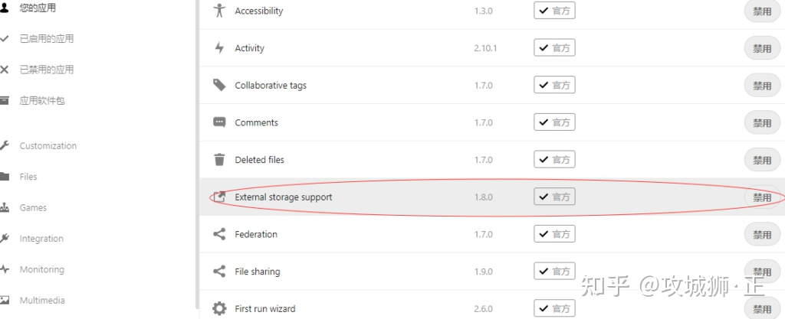
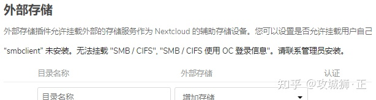
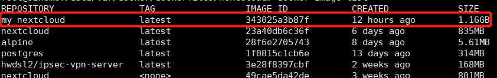
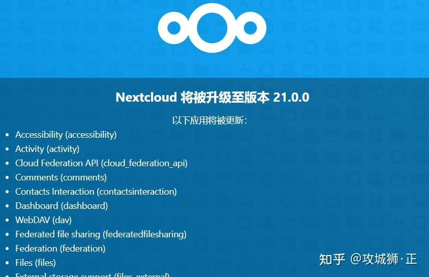
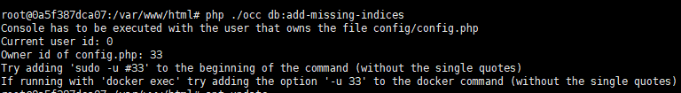

nextcloud安装
1 | docker run -itd --name nextcloud -v /userdatas/Sandisk/nextcloud:/var/www/html --link mariadb -p 800:80 nextcloud |
https://zhuanlan.zhihu.com/p/353252517
解除文件上传时“块大小”的限制，
1 | docker exec --user www-data 容器ID php occ config:app:set files max_chunk_size --value 0 |
重建nextcloud索引
针对通过非nextcloud客户端（手机、PC、网页端）途径放入nextcloud目录的文件
1 | docker exec -u www-data nextcloud php occ files:scan --all |
使用该命令重建索引，如果报下面错误：
1 | Starting scan for user 1 out of 1 (xxx) |
那么，你需要将移入的文件（或目录）的所有这改为:33:tape。
1 | chown -R 33:tape * |
生成缩略图
使用时会发现，Nextcloud 上传的视频不能生成缩略图。其实 Nextcloud 本身支持生成视频缩略图，需要安装 ffmpeg 并修改配置：
1 | docker exec -it nextcloud bash |
停止NextCloud容器，再修改/var/www/html/config/config.php配置文件，添加：
1 | 'enable_previews' => true, |
再次启动容器即可生效。
支持挂载Samba
Nextcloud 不仅是一个私有网盘，它还支持管理其他外部存储。可以把Samba共享，FTP，WebDAV等挂载到目录下统一访问管理。
Nextcloud默认是没有开启外部存储功能的，需在手动启用插件。

然后在设置里可以看到：

Docker部署的 Nextcloud 默认是无法挂载 Samba 的，这里会显示：

需要在容器内安装smbclient：
1 | docker exec -it nextcloud bash |
重启Docker服务即可。
自制Docker镜像
以上两处调整，在升级 Nextcloud 镜像后又需要重新执行一次。我们可以用原镜像为基础定制一个 Nextcloud 镜像。
新建文件 Dockerfile ，内容如下：
1 | FROM nextcloud:latest |
然后在该目录下执行：
1 | docker build -t my_nextcloud:latest ./ |
执行完后会生成新的镜像：

我们只需要用该镜像运行即可。
Nextcloud 升级
1.执行 docker pull nextcloud:latest 下载最新镜像，再构建自己的镜像。
2.停止正在运行的Nextcloud并删除：docker stop nextcloud
3.重新运行镜像，参数和原来一样。
通过 Web 进入 Nextcloud 就会出现：

不推荐在该界面上点击更新。因为在更新内容多的情况，尤其是第三方应用更新，时间较长，浏览器可能会超时，推荐使用 occ 更新。
occ命令是Nextcloud的命令行界面，Nextcloud管理员可以通过occ执行许多常见的服务器操作。命令格式：sudo -u www-data php occ <your_command>
在Docker中运行的Nextcloud执行occ会出现权限问题：
[]
正确执行：
docker exec --user www-data nextcloud php occ upgrade
写这篇文章时，Nextcloud 21刚刚发布，性能提升巨大。我自己也一直用 Nextcloud 管理家庭的照片和视频，非常Nice。